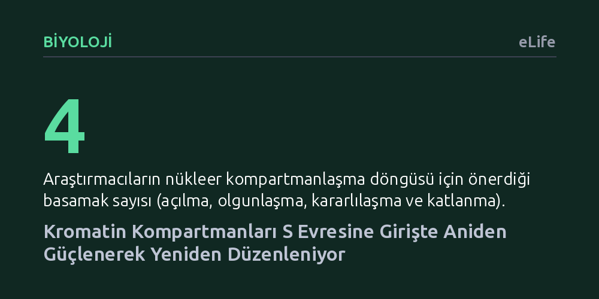

BIYOLOJI · eLife · 2026-10-11
Araştırmacılar, fare kök hücrelerinde hücre döngüsü boyunca çekirdekteki aktif ve inaktif DNA kompartmanlarının nasıl değiştiğini inceledi. Yerleşik görüşün aksine, bu yapıların sabit kalmadığı; hücrenin S evresine girmesiyle aniden güçlenip yeniden düzenlendiği tespit edildi.
Genom mimarisinin hücre döngüsü boyunca durağan olmadığını, DNA kopyalanmaya başlarken aktif biçimde olgunlaşıp yeniden şekillendiğini gösteriyor.

Hücrelerimizin çekirdeğinde yaklaşık iki metre uzunluğundaki DNA ipliği rastgele bir yumak halinde durmaz. Genom, aktif çalışan genlerin toplandığı "A kompartmanı" ile suskun genlerin yer aldığı "B kompartmanı" olarak iki ana bölgeye ayrılır. Bu üç boyutlu mimari, hangi genlerin okunup hangilerinin sessiz kalacağını belirleyen temel kurallardan biridir.
Bugüne kadarki araştırmaların büyük bölümü, kromozomların mikroskop altında net görülebildiği mitoz bölünme anına odaklanmıştı. Oysa hücre, ömrünün neredeyse tamamını interfaz adı verilen hazırlık evresinde geçirir; bu süreçte hem büyür hem de DNA'sını kopyalar. Bilim insanları uzun süre bu iki kompartmanın interfaz boyunca durağan kaldığını varsayıyordu. Bu varsayımın geçerliliğini sınamak, genomun gerçekte nasıl yönetildiğini anlamak için kritik bir soru işaretiydi.
Hücre döngüsünü incelemenin geleneksel yolu, hücreleri kimyasal maddelerle belirli bir evrede durdurup eşzamanlı kılmaktır. Ancak bu kimyasallar hücrenin doğal işleyişini bozar ve kromatin yapısında yapay değişikliklere neden olabilir. Araştırmacılar bu sorunu aşmak için kimyasal ilaç kullanmayan ve hücrelerin doğal döngüsünü bozmayan bir yöntem geliştirdi.
Çalışmada fare embriyonik kök hücreleri kullanıldı. Hücrelerin hangi döngü evresinde olduğunu canlıyken floresan ışıma ile gösteren Fucci sistemi ile DNA ipliklerinin temas noktalarını belirleyen Hi-C tekniği birleştirildi. Böylece hücreler doğal akışları içinde G1, S ve G2 evrelerine ayrılarak kromozomların üç boyutlu katlanma dinamikleri kesintisiz olarak incelendi.
Elde edilen sonuçlar yerleşik kabulü sarstı: A ve B kompartmanları interfaz boyunca sabit kalmıyordu. Hücre DNA'sını kopyalamaya başladığı S evresine girdiği anda, kompartmanlar arasındaki ayrışma aniden güçlendi. Araştırmacıların "kompartman olgunlaşması" adını verdiği bu belirgin güçlenme, S evresi boyunca kararlılığını koruduktan sonra geç S ve G2 evrelerinde yeniden zayıflamaya başladı.
Araştırmacılar bu olgunlaşmanın aktif DNA sentezinden değil, hücrenin G1 evresinden S evresine geçiş anından kaynaklandığını belirledi. Özellikle aktif genleri barındıran A kompartmanında kapsamlı bir mimari dönüşüm yaşanıyor; bağımsız bölgeler uzun mesafeli temaslar kurarak daha düzenli bir yapıya kavuşuyordu. Bu olgunlaşma süreci yalnızca kök hücrelerde değil, farenin farklı gelişimsel dokularında da gözlendi.
Bu bulgular, genom kompartmanlarının interfaz boyunca şaşırtıcı bir esnekliğe sahip olduğunu ortaya koyuyor. Araştırmacılar gözlemlerine dayanarak çekirdek organizasyonunu dört aşamalı bir modelle yeniden tanımladı: G1 evresinde kromozomların açılması, G1/S geçişinde kromatinin olgunlaşması, S evresinde yapının kararlı kalması ve G2 evresinde yeniden katlanma.
Önerilen model, G1'den S evresine geçişin yalnızca genetik materyalin kopyalanması için değil, çekirdeğin mekânsal mimarisinin baştan aşağı yeniden yapılandırılması için de kritik bir eşik olduğunu gösteriyor. Bulgular şimdilik fare modelleriyle sınırlı olsa da, çok hücreli canlılarda gen düzenlenmesinin hücre döngüsüyle nasıl dinamik bir uyum içinde çalıştığına dair sağlam bir zemin sunuyor.